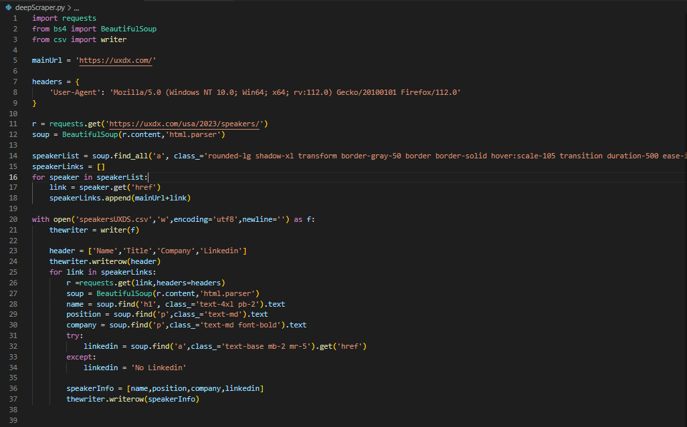
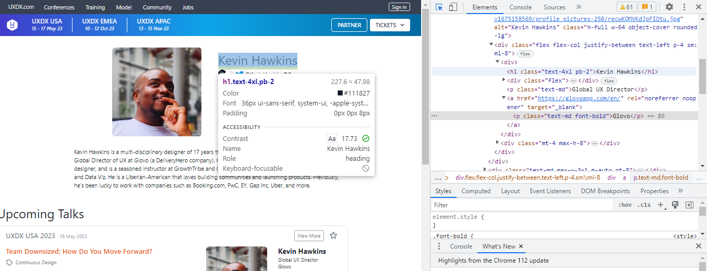
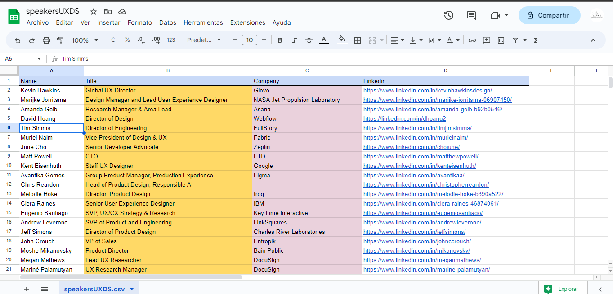

Python Web Scraper
Potential clients Marketing tool
The task
While i was working as part of the marketing team for a Company in Mexico, i developed this web scraper that will go into Tech Conferences websites, and get the information of the speakers attending the conferences, so that later we can create a contact list and reach out to them.
I used python, and BeautifulSoup.

The Logic
First we get all the links from all the "cards" on the Speakers section
Then the scraper will go inside each link and collect the data that
the company considered useful.

Then the scraper will save all that information in a .csv file

It is a pretty simple scraper but it saved the Marketing team hours of manual work,
and it gave the company more time to foucus on landing deals.
Project's github repository https://github.com/DavidAceituno88/webScraper
Linkedin